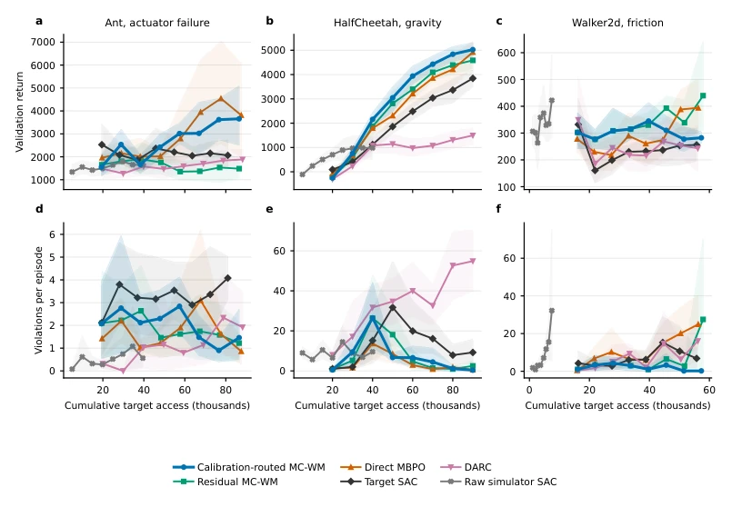
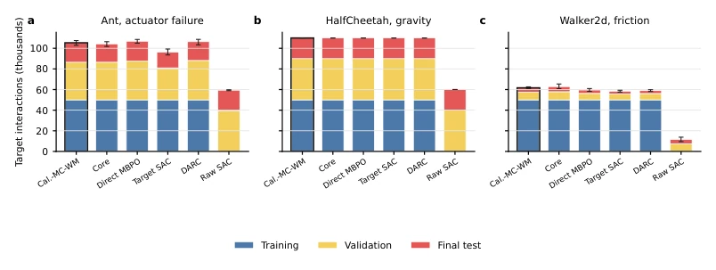

这篇论文给 MBRL 的“选模型”难题开了个新方子，但药方有点贵。MC-WM 的核心逻辑其实挺朴素：别瞎猜，先拿一小块数据测测哪个模型（残差修正 vs 直接拟合）更靠谱，再决定用谁。这种“校准风险路由”听起来高大上，本质上就是基于标准化误差的模型选择。亮点在于它搞了个“精确路由反事实”，强制对比自动路由和强制路由，证明路由本身没副作用，这点很严谨。不过，吐槽一下：实验全在 MuJoCo 里玩“模拟器到模拟器”的把戏，离真机还有距离。而且跟直接目标 MBPO 比，回报差异没显著性，这“路由”到底值不值这个算力成本？残差部分的稀疏性也没带来明显优势，感觉像是为了稀疏而稀疏。总之，工程上挺精致，理论上还没完全说服人。
This paper offers a new prescription for the "model selection" dilemma in MBRL, but the prescription is a bit expensive. The core logic of MC-WM is actually quite simple: do not guess blindly; first test with a small piece of data to see which model (residual correction vs. direct fitting) is more reliable, then decide who to use. This "calibrated risk routing" sounds high-end, but essentially it is model selection based on standardized error. The highlight is that it created an "exact routing counterfactual", forcing a comparison between automatic routing and forced routing to prove that routing itself has no side effects, which is very rigorous. However, a complaint: the experiments are all playing the "simulator-to-simulator" trick in MuJoCo, still far from real machines. Moreover, compared to direct target MBPO, the return difference is not significant, is this "routing" worth the computational cost? The sparsity of the residual part also did not bring obvious advantages, feels like sparsity for the sake of sparsity. In short, it is quite refined in engineering, but theoretically not fully convincing yet.
研究动机Motivation
基于模型的强化学习（MBRL）虽然能利用仿真经验，但在模拟器到目标域（simulator-to-target）存在动力学偏移时，模型选择成了难题。直接复用仿真模型或仅用有限目标数据拟合新模型，都可能失效（Chua et al., 2018; Janner et al., 2019）。现有工作如 DARC 试图通过分类器修正奖励，但没解决模型架构选择问题（Eysenbach et al., 2020）。残差世界模型虽能修正仿真器，但未必在所有偏移下都优于直接拟合。核心问题在于：在有限数据下，该部署哪种目标模型家族（残差修正还是直接拟合），以及想象出的状态转移该赋予多大权重？现有方法缺乏在部署前根据数据风险自动选择模型路径的机制，导致策略优化可能利用模型拟合分布中的罕见错误（Ross & Bagnell, 2012）。本文旨在通过校准风险路由解决这一模型选择与信任度分配问题。
Although Model-Based Reinforcement Learning (MBRL) can leverage simulation experience, model selection becomes a challenge when dynamics shifts exist from simulator to target domain. Directly reusing simulation models or fitting new models using only limited target data may both fail (Chua et al., 2018; Janner et al., 2019). Existing work such as DARC attempts to correct rewards via classifiers but does not address the model architecture selection problem (Eysenbach et al., 2020). While residual world models can correct simulators, they are not necessarily superior to direct fitting under all shifts. The core problem lies in: under limited data, which target model family (residual correction or direct fitting) should be deployed, and what weight should be assigned to imagined state transitions? Existing methods lack a mechanism to automatically select model paths based on data risk prior to deployment, leading to policy optimization potentially exploiting rare errors in the model-fitted distribution (Ross & Bagnell, 2012). This paper aims to resolve this model selection and trust allocation problem through calibrated risk routing.
The overall process of MC-WM is divided into two stages: offline model selection and online policy optimization. First, the initial target data D0_T is partitioned into mutually exclusive fitting (fit), selection (sel), and calibration (cal) sets. Two candidate models are fitted in parallel: the residual candidate c_MR (correcting the frozen simulator c_MS) and the direct candidate c_MD (directly fitting target transitions). The standardized joint state-reward error R_m is calculated using the calibration set, and the one with lower risk is selected as the deployment model c_MT. In the online phase, the deployment model generates one-step imagined transitions, and its policy-critic loss is weighted by the confidence signal w_i and deterministic predicate chi_i, without modifying physical rewards. The residual branch employs locked sparse support (SINDy principle) combined with a mask neural network margin to ensure interpretability. Confidence is learned through a non-negative log-confidence critic Q_delta, incorporating state error and model uncertainty. Policy optimization adopts the SAC framework, introducing a violation-aware mechanism that linearly increases violation cost during the latter half of online training. Once the routing decision is determined, it remains fixed, and strict comparability between automatic and forced routing is ensured via independent random streams.
Experiments were conducted in three MuJoCo environments: Ant, HalfCheetah, and Walker, applying controlled dynamics shifts to actuators, gravity, and friction, respectively. Comparison baselines include Target Domain SAC, Direct Target MBPO, DARC, and Original Simulation SAC. Evaluation metrics consist of undiscounted episode return and violation count. Results indicate that MC-WM's returns significantly exceed those of Target SAC and DARC across all three environments, with fewer violations. The routing mechanism automatically selects the direct model in Ant and gravity tasks, and the residual model in the Walker friction task, with automatic routing and forced routing being completely consistent. However, compared to Direct Target MBPO, the return difference is not statistically significant, and residual sparsity did not yield endpoint advantages. Ablation studies show that calibrated risk selection outperforms fixed residual routing, though the specific contributions of confidence and predicates are not fully disentangled.
其他图片Other Figures

Figure 2: Validation return and violations against cumulative target access. Lines are ten-seed means and bands are 20,000-resample percentile-bootstrap 95% confidence intervals for the cross-seed mean. The horizontal coordinate includes target training plus cumulative validation interactions. Validation outcomes do not enter gradient updates, but the registered candidate may use its validation trajectory for checkpoint restoration.

Figure 3: Actual target access by method and environment. Bars show cross-seed means for training, validation, and final-test transitions; error bars show the 20,000-resample percentile-bootstrap 95% CI of mean total access.